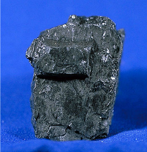
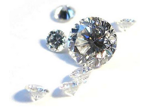

Sobre o carbono
O carbono é um elemento químico de símbolo C e número atômico 6. É um não metal que pertence ao grupo 14 da tabela periódica. O carbono é um dos elementos mais abundantes na Terra e é essencial para a vida como a conhecemos, pois é o principal componente dos compostos orgânicos.
O carbono possui várias formas alotrópicas, sendo as mais conhecidas o diamante, o grafite e o carbono amorfo. O diamante é uma forma cristalina do carbono que é extremamente duro e transparente, enquanto o grafite é uma forma macia e opaca que é usada em lápis e lubrificantes. O carbono amorfo inclui materiais como carvão e fuligem.
Além disso, o carbono é fundamental na química orgânica, que estuda os compostos que contêm carbono. Esses compostos são a base da vida, formando moléculas como proteínas, lipídios, carboidratos e ácidos nucleicos. O carbono também desempenha um papel crucial no ciclo do carbono, que envolve a troca de carbono entre a atmosfera, os oceanos, os solos e os organismos vivos.
Propriedades do Carbono
O carbono pode facilmente se ligar a outros elementos, como hidrogênio, oxigênio e nitrogênio. Essas ligações produzem moléculas orgânicas como proteínas, DNA e carboidratos.
Átomos de carbono se unem para formar longas cadeias, anéis e estruturas complexas que se combinam em moléculas maiores, como enzimas. Essas estruturas ajudam as células a crescer, reproduzir e desempenhar funções importantes.
Aplicações do Carbono
O principal uso industrial do carbono é como componente de hidrocarbonetos, especialmente os combustíveis como petróleo e gás natural; do primeiro se obtém por destilação nas refinarias gasolinas, querosene e óleos e, ainda, é usado como matéria-prima para a obtenção de plásticos, enquanto que o segundo está se impondo como fonte de energia por sua combustão mais limpa.
 Curiosidades do Carbono
Todo organismo vivo é feito de compostos baseados em carbono. De micróbios a baleias, a vida não é possível sem carbono.
O carbono é o quarto elemento mais abundante no universo, depois do hidrogênio, hélio e oxigênio.
Pense no seu corpo. A comida que comemos, a energia que utilizamos e até mesmo nossas próprias células são feitas de moléculas baseadas em carbono. O carbono é o bloco de construção para nossas vidas.